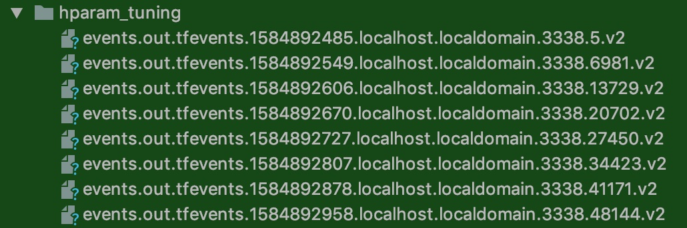
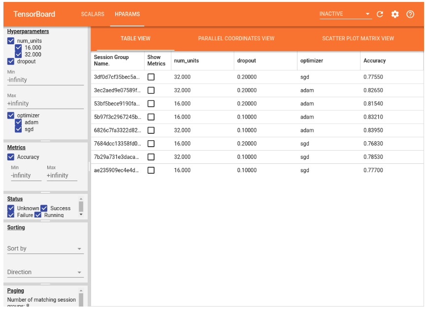

4.11 综合案例：模型导出与部署¶
学习目标¶
- 目标
- 掌握TensorFlow模型的导出(saved_model格式)
- 掌握Tensorflow模型的部署
- 掌握TensorFlow模型的客户端调用
- 掌握TensorFlow模型的超参数调优使用
- 应用
- 无
4.11.1 TensorFlow 模型导出¶
在部署模型时，我们的第一步往往是将训练好的整个模型完整导出为一系列标准格式的文件，然后即可在不同的平台上部署模型文件。这时，TensorFlow 为我们提供了 SavedModel 这一格式。
- 与前面介绍的 Checkpoint 不同，SavedModel 包含了一个 TensorFlow 程序的完整信息： 不仅包含参数的权值，还包含计算的流程（即计算图） 。
- 特点：当模型导出为 SavedModel 文件时，无需建立模型的源代码即可再次运行模型，这使得 SavedModel 尤其适用于模型的分享和部署。后文的 TensorFlow Serving（服务器端部署模型）、TensorFlow Lite（移动端部署模型）以及 TensorFlow.js 都会用到这一格式。
除了CheckPointTensorFlow还会有其他格式，这里做统一介绍：部署在线服务（Serving）时官方推荐使用 SavedModel 格式，而部署到手机等移动端的模型一般使用 FrozenGraphDef 格式（最近推出的 TensorFlow Lite 也有专门的轻量级模型格式 *.lite，和 FrozenGraphDef 十分类似）。这些格式之间关系密切，可以使用 TensorFlow 提供的 API 来互相转换。下面简单介绍几种格式：
- 1、GraphDef
- 这种格式文件包含 protobuf 对象序列化后的数据，包含了计算图，可以从中得到所有运算符（operators）的细节，也包含张量（tensors）和 Variables 定义，但不包含 Variable 的值，因此只能从中恢复计算图，但一些训练的权值仍需要从 checkpoint 中恢复。
- 2、*.pb
-
TensorFlow 一些例程中用到*.pb 文件作为预训练模型，这和上面 GraphDef 格式稍有不同，属于冻结（Frozen）后的 GraphDef 文件，简称 FrozenGraphDef 格式。这种文件格式不包含 Variables 节点。将 GraphDef 中所有 Variable 节点转换为常量（其值从 checkpoint 获取），就变为 FrozenGraphDef 格式。
-
3、SavedModel
- 在使用 TensorFlow Serving 时，会用到这种格式的模型。该格式为 GraphDef 和 CheckPoint 的结合体，另外还有标记模型输入和输出参数的 SignatureDef。从 SavedModel 中可以提取 GraphDef 和 CheckPoint 对象。
- 其中 saved_model.pb（或 saved_model.pbtxt）包含使用 MetaGraphDef protobuf 对象定义的计算图；assets 包含附加文件；variables 目录包含 tf.train.Saver() 对象调用 save() API 生成的文件。
使用下面的代码即可将模型导出为 SavedModel：
tf.saved_model.save(model, "保存的目标文件夹名称")
在需要载入 SavedModel 文件时，使用即可
model = tf.saved_model.load("保存的目标文件夹名称")
4.11.2 使用案例¶
1、将之前CIFAE100分类模型进行导出和导入，导出模型到 saved/mlp/1 文件夹中，mlp可以自己指定的一个模型名称，1为版本号，必须提供，后面开启服务需要有版本号
import tensorflow as tf
import os
os.environ["TF_CPP_MIN_LOG_LEVEL"] = "2"
def main():
num_epochs = 1
batch_size = 32
learning_rate = 0.001
model = tf.keras.models.Sequential([
tf.keras.layers.Flatten(),
tf.keras.layers.Dense(120, activation=tf.nn.relu),
tf.keras.layers.Dense(100),
tf.keras.layers.Softmax()
])
(train, train_label), (test, test_label) = \
tf.keras.datasets.cifar100.load_data()
model.compile(
optimizer=tf.keras.optimizers.Adam(learning_rate=learning_rate),
loss=tf.keras.losses.sparse_categorical_crossentropy,
metrics=[tf.keras.metrics.sparse_categorical_accuracy]
)
model.fit(train, train_label, epochs=num_epochs, batch_size=batch_size)
tf.saved_model.save(model, "./saved/mlp/1")
2、并且模型加载出来，测试性能就能够
- 注意：这里加载模型可以不用初始化之前的模型（不需要），直接加载到model使用
def test():
model = tf.saved_model.load("./saved/mlp/1")
sparse_categorical_accuracy = tf.keras.metrics.SparseCategoricalAccuracy()
(train, train_label), (test, test_label) = \
tf.keras.datasets.cifar100.load_data()
y_pred = model(test)
sparse_categorical_accuracy.update_state(y_true=test_label,
y_pred=y_pred)
print("test accuracy: %f" % sparse_categorical_accuracy.result())
输出结果
test accuracy: 0.010000
3、自定义的keras模型使用：¶
使用继承 tf.keras.Model 类建立的 Keras 模型同样可以以相同方法导出，唯须注意 call 方法需要以 @tf.function 修饰，以转化为 SavedModel 支持的计算图，代码如下：
def __init__(self):
super().__init__()
self.flatten = tf.keras.layers.Flatten()
self.dense1 = tf.keras.layers.Dense(units=100, activation=tf.nn.relu)
self.dense2 = tf.keras.layers.Dense(units=10)
@tf.function
def call(self, inputs): # [batch_size, 28, 28, 1]
x = self.flatten(inputs) # [batch_size, 784]
x = self.dense1(x) # [batch_size, 100]
x = self.dense2(x) # [batch_size, 10]
output = tf.nn.softmax(x)
return output
model = MLP()
4.11.3 TensorFlow Serving¶
- 背景：当我们将模型训练完毕后，往往需要将模型在生产环境中部署。最常见的方式，是在服务器上提供一个 API，即客户机向服务器的某个 API 发送特定格式的请求，服务器收到请求数据后通过模型进行计算，并返回结果。如果仅仅是做一个 Demo，不考虑高并发和性能问题，其实配合Django、Flask等 Python 下的 Web 框架就能非常轻松地实现服务器 API。不过，如果是在真的实际生产环境中部署，这样的方式就显得力不从心了。这时，TensorFlow 为我们提供了 TensorFlow Serving 这一组件，能够帮助我们在实际生产环境中灵活且高性能地部署机器学习模型。
TensorFlow Serving是一种灵活的高性能服务系统，适用于机器学习模型，专为生产环境而设计。TensorFlow Serving可以轻松部署新算法和实验，同时保持相同的服务器架构和API。TensorFlow Serving提供与TensorFlow模型的开箱即用集成，但可以轻松扩展以提供其他类型的模型和数据。

特点：TensorFlow Serving 支持热更新模型，其典型的模型文件夹结构如下：
/saved_model_files
/1 # 版本号为1的模型文件
/assets
/variables
saved_model.pb
...
/N # 版本号为N的模型文件
/assets
/variables
saved_model.pb
上面 1~N 的子文件夹代表不同版本号的模型。当指定 --model_base_path 时，只需要指定根目录的 绝对地址 （不是相对地址）即可。例如，如果上述文件夹结构存放在 home/snowkylin 文件夹内，则 --model_base_path 应当设置为 home/snowkylin/saved_model_files （不附带模型版本号）。TensorFlow Serving 会自动选择版本号最大的模型进行载入。
4.11.3.1 安装Tensorflow Serving¶
安装过程详细参考官网
- 使用Docker安装进行，首先你的电脑当中已经安装过docker容器
- Centos：参考：https://www.cnblogs.com/wdliu/p/10194332.html
TensorFlow Serving 可以使用 apt-get 或 Docker 安装。在生产环境中，推荐 使用 Docker 部署 TensorFlow Serving 。
4.11.3.2 TensorFlow Serving Docker 使用介绍¶
- 获取最新TF Serving docker镜像
docker pull tensorflow/serving
- 查看docker镜像
docker images
- 运行tf serving（即创建一个docker容器来运行）
docker run -p 8501:8501 -p 8500:8500 --mount type=bind,source=/home/ubuntu/detectedmodel/commodity,target=/models/commodity -e MODEL_NAME=commodity -t tensorflow/serving
说明：
-p 8501:8501为端口映射，-p 主机端口:docker容器程序(tf serving)使用端口，访问主机8501端口就相当于访问了tf serving程序的8501端口- tf serving 使用8501端口对外提供HTTP服务，使用8500对外提供gRPC服务，这里同时开放了两个端口的使用
--mount type=bind,source=/home/ubuntu/detectedmodel/commodity,target=/models/commodity为文件映射，将主机(source)的模型文件映射到docker容器程序（target)的位置，以便tf serving使用模型，target参数为/models/我的模型-e MODEL_NAME=commodity设置了一个环境变量，名为MODEL_NAME，此变量被tf serving读取，用来按名字寻找模型，与上面target参数中我的模型对应-t为tf serving创建一个伪终端，供程序运行tensorflow/serving为镜像名
常见docker命令：
docker ps:查看正在运行的容器
docker images:查看已下载的景象
docker stop 8779b492e4aa：停止正在运行的ID为8779b492e4aa的容器，IP可以通过docker ps查看
4.11.3.3 案例操作：commodity模型服务运行¶
- 1、运行命令
docker run -p 8501:8501 -p 8500:8500 --mount type=bind,source=/root/cv_project/tf_example
/saved/mlp,target=/models/mlp -e MODEL_NAME=mlp -t tensorflow/serving &
- 2、查看是否运行
itcast:~$ docker ps
CONTAINER ID IMAGE COMMAND CREATED STATUS POR
TS NAMES
1354f9aeab33 tensorflow/serving "/usr/bin/tf_serving…" 7 seconds ago Up 5 seconds 0.0
.0.0:8500-8501->8500-8501/tcp gifted_jackson
4.11.5 在客户端调用以 TensorFlow Serving 部署的模型¶
TensorFlow Serving 支持以 gRPC 和 RESTful API 调用以 TensorFlow Serving 部署的模型。RESTful API 以标准的 HTTP POST 方法进行交互，请求和回复均为 JSON 对象。为了调用服务器端的模型，我们在客户端向服务器发送以下格式的请求：服务器 URI： http://服务器地址:端口号/v1/models/模型名:predict
请求内容：
{
"signature_name": "需要调用的函数签名（Sequential模式不需要）",
"instances": 输入数据
}
回复为：
{
"predictions": 返回值
}
4.11.5.1 直接使用curl¶
运行下面命令
curl -d '{"instances": [image_data]}' \
-X POST http://localhost:8501/v1/models/mlp:predict
4.11.5.2 编写客户端代码¶
示例使用Python 的 Requests 库（你可能需要使用 pip install requests 安装该库）向本机的 TensorFlow Serving 服务器发送20张图像并返回预测结果，同时与测试集的真实标签进行比较。
def client():
import json
import numpy as np
import requests
(_, _), (test, test_label) = \
tf.keras.datasets.cifar100.load_data()
data = json.dumps({
"instances": test[0:20].tolist() # array转换成列表形式
})
headers = {"content-type": "application/json"}
json_response = requests.post(
'http://localhost:8501/v1/models/mlp:predict',
data=data, headers=headers)
predictions = np.array(json.loads(json_response.text)['predictions'])
print(np.argmax(predictions, axis=-1))
print(test_label[0:20])
if __name__ == '__main__':
# main()
# test()
client()
输出：
[67 67 67 67 67 67 67 67 67 67 67 67 67 67 67 67 67 67 67 67]
[[49]
[33]
[72]
[51]
[71]
[92]
[15]
[14]
[23]
[ 0]
[71]
[75]
[81]
[69]
[40]
[43]
[92]
[97]
[70]
[53]]
因为模型并没有训练多久，只迭代一次，所以效果不好，主要是完成整个流程。
4.11.5 HParams-超参数调优¶
构建深度学习模型时，需要选择各种超参数，例如模型中的学习率，优化器，神经元个数等。这些决策会影响模型指标，例如准确性。因此，工作流程中的一个重要步骤是为您的问题确定最佳的超参数，这通常涉及实验。此过程称为“超参数优化”或“超参数调整”。TensorBoard中的HParams仪表板提供了多种工具，帮助确定最佳实验或最有希望的超参数集。
注：Note: The HParams summary APIs and dashboard UI are in a preview stage and will change over time.
使用导入
from tensorboard.plugins.hparams import api as hp
4.11.5.1 案例：CIFAR100分类模型添加参数进行调优¶
- 使用步骤
- 1、通过hp设置HParams 实验超参数
- 2、将试验参数添加到模型指定结构当中，或者编译训练的过程参数中
- 3、使用超参数调优方法对不同的超参数集训练每个实验组合
1、设置HParams 实验参数
- hp.Discrete:设置离散类型的参数值，比如神经元个数，优化方法
- 通过HP_NUM_UNITS.domain.values获取所有的值
- hp.RealInterval:设置连续型类型的上下限，能够获取最大值最小值
- HP_DROPOUT.domain.min_value:获取最小值
- HP_DROPOUT.domain.max_value:获取最大值
HP_NUM_UNITS = hp.HParam('num_units', hp.Discrete([1024, 512]))
HP_DROPOUT = hp.HParam('dropout', hp.RealInterval(0.2, 0.3))
HP_OPTIMIZER = hp.HParam('optimizer', hp.Discrete(['adam', 'sgd']))
2、将试验参数添加到模型指定结构当中，或者编译训练的过程参数中
- (1)在需要设置超参数的位置填入hparams参数值
- (2)添加记录hparams的回调hp.KerasCallback('./logs/hparam_tuning/', hparams)
- 其中目录自己设定即可
def train_test_model(self, hparams):
"""训练验证模型
:return:
"""
# 1、定义模型中加入了一个dropout
model = tf.keras.Sequential([
tf.keras.layers.Conv2D(32, kernel_size=5, strides=1, padding='same', activation=tf.nn.relu),
tf.keras.layers.MaxPool2D(pool_size=2, strides=2),
tf.keras.layers.Conv2D(64, kernel_size=5, strides=1, padding='same', activation=tf.nn.relu),
tf.keras.layers.MaxPool2D(pool_size=2, strides=2),
tf.keras.layers.Flatten(),
tf.keras.layers.Dense(hparams[HP_NUM_UNITS], activation=tf.nn.relu),
tf.keras.layers.Dropout(hparams[HP_DROPOUT]),
tf.keras.layers.Dense(100, activation=tf.nn.softmax)
])
# 2、模型设置以及训练
model.compile(optimizer=hparams[HP_OPTIMIZER],
loss=tf.keras.losses.sparse_categorical_crossentropy,
metrics=['accuracy'])
tensorboard = tf.keras.callbacks.TensorBoard(log_dir='./graph', histogram_freq=1,
write_graph=True, write_images=True)
# 添加记录hparams的回调hp.KerasCallback('./graph/', hparams)
model.fit(self.train, self.train_label,
epochs=1, batch_size=32,
callbacks=[tensorboard, hp.KerasCallback('./logs/hparam_tuning/', hparams)],
validation_data=(self.test, self.test_label))
return None
3、使用超参数调优方法对不同的超参数集训练每个实验组合
使用网格搜索：尝试使用离散参数的所有组合或者连续型值参数的上限和下限。对于更复杂的场景，随机选择每个超参数值会更有效（随机搜索）。
def hyper_parameter(self):
"""超参数调优
:return:
"""
session_num = 0
for num_units in HP_NUM_UNITS.domain.values:
for dropout_rate in (HP_DROPOUT.domain.min_value, HP_DROPOUT.domain.max_value):
for optimizer in HP_OPTIMIZER.domain.values:
hparams = {
HP_NUM_UNITS: num_units,
HP_DROPOUT: dropout_rate,
HP_OPTIMIZER: optimizer,
}
print('--- 开始 实验: %s' % session_num)
print({h.name: hparams[h] for h in hparams})
self.train_test_model(hparams)
session_num += 1
return None
注：其中如果对于连续的值比如说你的模型中learning_rate,假设设置0.0001~0.1，可以这样迭代使用
for lr_tate in tf.linspace(
HP_LR.domain.min_value,
HP_LR.domain.max_value,
res):
最终打印效果为：
--- 开始 实验: 0
{'num_units': 512, 'dropout': 0.2, 'optimizer': 'adam'}
Train on 50000 samples, validate on 10000 samples
Epoch 1/2
32/50000 [..............................] - ETA: 21:58 - loss: 4.6257 - accuracy: 0.0000e+002020-03-22 05:02:24.239954: E
50000/50000 [==============================] - 61s 1ms/sample - loss: 3.6983 - accuracy: 0.1391 - val_loss: 3.1219 - val_accuracy: 0.2460
Epoch 2/2
50000/50000 [==============================] - 60s 1ms/sample - loss: 2.9337 - accuracy: 0.2777 - val_loss: 2.7689 - val_accuracy: 0.3094
--- 开始 实验: 1
{'num_units': 512, 'dropout': 0.2, 'optimizer': 'sgd'}
Train on 50000 samples, validate on 10000 samples
Epoch 1/2
32/50000 [..............................] - ETA: 9:12 - loss: 4.5919 - accuracy: 0.0000e+002020-03-22 05:04:26.409071: E
50000/50000 [==============================] - 55s 1ms/sample - loss: 4.3805 - accuracy: 0.0404 - val_loss: 4.1078 - val_accuracy: 0.0641
Epoch 2/2
50000/50000 [==============================] - 55s 1ms/sample - loss: 3.9086 - accuracy: 0.1072 - val_loss: 3.7098 - val_accuracy: 0.1479
--- 开始 实验: 2
{'num_units': 512, 'dropout': 0.3, 'optimizer': 'adam'}
Train on 50000 samples, validate on 10000 samples
Epoch 1/2
32/50000 [..............................] - ETA: 11:06 - loss: 4.6464 - accuracy: 0.03122020-03-22 05:06:18.355198: E
50000/50000 [==============================] - 61s 1ms/sample - loss: 3.7051 - accuracy: 0.1400 - val_loss: 3.1361 - val_accuracy: 0.2422
Epoch 2/2
50000/50000 [==============================] - 60s 1ms/sample - loss: 2.9754 - accuracy: 0.2687 - val_loss: 2.7621 - val_accuracy: 0.3118
--- 开始 实验: 3
{'num_units': 512, 'dropout': 0.3, 'optimizer': 'sgd'}
Train on 50000 samples, validate on 10000 samples
Epoch 1/2
32/50000 [..............................] - ETA: 9:03 - loss: 4.5909 - accuracy: 0.0000e+002020-03-22 05:08:20.864262: E
50000/50000 [==============================] - 55s 1ms/sample - loss: 4.3802 - accuracy: 0.0399 - val_loss: 4.0482 - val_accuracy: 0.0807
Epoch 2/2
50000/50000 [==============================] - 55s 1ms/sample - loss: 3.9227 - accuracy: 0.1036 - val_loss: 3.7022 - val_accuracy: 0.1423
--- 开始 实验: 4
{'num_units': 1024, 'dropout': 0.2, 'optimizer': 'adam'}
Train on 50000 samples, validate on 10000 samples
Epoch 1/2
32/50000 [..............................] - ETA: 11:28 - loss: 4.6099 - accuracy: 0.0000e+002020-03-22 05:10:12.802252: E
50000/50000 [==============================] - 78s 2ms/sample - loss: 3.5546 - accuracy: 0.1683 - val_loss: 3.0440 - val_accuracy: 0.2580
Epoch 2/2
50000/50000 [==============================] - 77s 2ms/sample - loss: 2.7925 - accuracy: 0.3048 - val_loss: 2.7049 - val_accuracy: 0.3255
--- 开始 实验: 5
{'num_units': 1024, 'dropout': 0.2, 'optimizer': 'sgd'}
Train on 50000 samples, validate on 10000 samples
Epoch 1/2
32/50000 [..............................] - ETA: 9:22 - loss: 4.5938 - accuracy: 0.0000e+002020-03-22 05:12:50.161457: E
50000/50000 [==============================] - 68s 1ms/sample - loss: 4.3278 - accuracy: 0.0477 - val_loss: 3.9872 - val_accuracy: 0.0849
Epoch 2/2
50000/50000 [==============================] - 67s 1ms/sample - loss: 3.8071 - accuracy: 0.1244 - val_loss: 3.6097 - val_accuracy: 0.1679
--- 开始 实验: 6
{'num_units': 1024, 'dropout': 0.3, 'optimizer': 'adam'}
Train on 50000 samples, validate on 10000 samples
Epoch 1/2
32/50000 [..............................] - ETA: 11:14 - loss: 4.6129 - accuracy: 0.0000e+002020-03-22 05:15:07.480836: E
50000/50000 [==============================] - 78s 2ms/sample - loss: 3.6139 - accuracy: 0.1548 - val_loss: 2.9943 - val_accuracy: 0.2691
Epoch 2/2
50000/50000 [==============================] - 77s 2ms/sample - loss: 2.8460 - accuracy: 0.2921 - val_loss: 2.7325 - val_accuracy: 0.3195
--- 开始 实验: 7
{'num_units': 1024, 'dropout': 0.3, 'optimizer': 'sgd'}
Train on 50000 samples, validate on 10000 samples
Epoch 1/2
32/50000 [..............................] - ETA: 9:22 - loss: 4.5689 - accuracy: 0.03122020-03-22 05:17:44.697445: E
50000/50000 [==============================] - 68s 1ms/sample - loss: 4.3251 - accuracy: 0.0469 - val_loss: 3.9708 - val_accuracy: 0.1038
Epoch 2/2
50000/50000 [==============================] - 67s 1ms/sample - loss: 3.8546 - accuracy: 0.1173 - val_loss: 3.6345 - val_accuracy: 0.1653
生成如下目录

4、最终可以通过Tensoboard开启读取对应目录的events文件看到对应结果
tensorboard --logdir './logs/hparam_tuning/'
可以在HPARAMS菜单中查看到下面的效果(官网截图)

并且其中有提供了两种主要的不同的查看方式：
- 1、表视图(TABLE VIEW)：列出了运行时，他们的超参数，和他们的指标。
- 2、平行坐标视图：每个运行为线通过每个hyperparemeter和度量的轴线去。单击并在任何轴上拖动鼠标以标记一个区域，该区域将仅突出显示通过该区域的运行。这对于确定哪些超参数组最重要很有用

4.11.6 总结¶
- TensorFlow模型的导出(saved_model格式)
- Tensorflow模型的部署
- TensorFlow模型的客户端调用
- TensorFlow模型的超参数调优